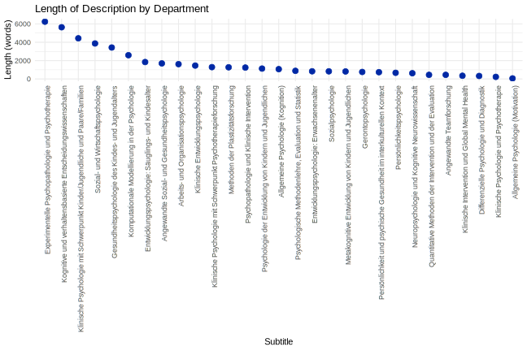

Automating online data collection using web-scraping
Tech Lunch @ CBDR
Sabou
01.05.25
Why?

Our program
- Why would I want to automate web-scraping?
- The right tool for the job…
- … but how do I know the job?
- Some practical examples and code
- Q&A
- (Optional: some funny statistics)
What I used it for
- exporting stock developments
- determining median hotel prices
- extracting word frequency
- circumventing copyright protection (flipbook) 🤫
- making a 💩ton of data entries
In general
- Structured data from webpages without export button
- Analyzing online-data (forums, product reviews, …)
- Systematic interactions with specific sites
- Fun personal projects 😊
- 💭…
But!! Be mindful of the ethical, regulatory and legal impact of your project.
The right tool for the job…

Selenium
automated interaction with a web-browser
Pro
- interaction with web-browser
- input data (e.g. forms, text)
- interaction with dynamic sites (JavaScript)
Con
- slow
- learning curve
- pain in the butt sometimes
BeautifulSoup4
extracts HTML structures and contents from webpages
Pro
- extracting html components of a single URL / a list of URLs where structure is standardized
- easy translations of objects into dataframes
Con
- interaction with web-browser
- input data (e.g. forms, text)
- interaction with dynamic sites (JavaScript)
Practical Examples
Beautifulsoup
How many chairs (and “sub-chairs”) do we have at the psychological Institute in Zurich?
- 5 chairs and 35 “sub-chairs”
- 5 chairs and 20 “sub-chairs”
- 5 chairs and 29 “sub-chairs”
Beautifulsoup
How many chairs (and “sub-chairs”) do we have at the psychological Institute in Zurich?
- 5 chairs and 35 “sub-chairs”
- 5 chairs and 20 “sub-chairs”
- 5 chairs and 29 “sub-chairs”
Beautifulsoup
import requests
from bs4 import BeautifulSoup
import pandas as pd
base_url = "https://www.psychologie.uzh.ch"
overview_url = base_url + "/de/bereiche/uebersicht.html"
response = requests.get(overview_url)
soup = BeautifulSoup(response.text,"html.parser")
## Level 1 subpages
subpage_links = []
all_data = []
for link in soup.find_all("a",href=True):
href = link["href"]
if href.startswith("/de/bereiche/") and href.endswith(".html"):
subpage_links.append(base_url+href)
print(base_url+href)
for subpage_url in subpage_links:
print(f"\nScraping {subpage_url}")
response = requests.get(subpage_url)
sub_soup = BeautifulSoup(response.text,"html.parser")
chair = sub_soup.find("h1") ## e.g. Entwicklungspsychologie
chair_name = chair.get_text(strip=True)
print(chair_name)
tables = sub_soup.find_all("table", class_="basic") ## e.g. "Entwicklungspsychologie: Kinder- und Säuglingsalter"
for i, table in enumerate(tables):
print(f"\nTable {i+1} in {subpage_url}")
table_data = []
table_data.append(chair_name)
rows = table.find_all("tr")
for i, row in enumerate(rows):
cells = row.find_all(["th","td"])
length = len(cells)
print(f"\nlen: {length}")
if length == 2:
title = cells[0].get_text(strip=True) if len(cells) > 0 else ""
table_data.append(title)
link = cells[1].find("a",href=True)
table_data.append(link)
print(f"\niteration: {i}")
print("Length = 2")
print(f"\nTitle: {title}")
print(f"\nLink: {link}")
if link:
full_description = []
subsubpage_link = base_url + link["href"]
subresponse = requests.get(subsubpage_link)
subsub_soup = BeautifulSoup(subresponse.text, "html.parser")
description = subsub_soup.find("section", class_="ContentArea")
if description:
section_text = description.get_text(strip=True, separator=" ")
full_description.append(section_text)
else:
print("No section found")
description_text = " ".join(full_description)
table_data.append(description_text)
print(f"\ndescription: {description_text}")
elif length == 1 and i == 1:
print(f"\niteration: {i}")
print("Length = 1")
name = cells[0].get_text(strip=True) if len(cells) > 0 else ""
print(f"\nName: {name}")
table_data.append(name)
elif length == 1 and i == 2:
print(f"\niteration: {i}")
print("Length = 1")
position = cells[0].get_text(strip=True) if len(cells) > 0 else ""
print(f"\nPosition: {position}")
table_data.append(position)
print(table_data)
all_data.append(table_data)
df = pd.DataFrame(all_data)
df.to_csv("beautifulsoup.csv",index=False,sep=";",quoting=1,encoding="utf-8-sig")Selenium
What is the most-watched video on the youtube channel of UZH?
- Der flexible Schweif des Prions vergiftet die Hirnzellen (en: the flexible tail of the prion poisons brain cells)
- Schwebebahn mit Hochtemperatur-Supraleitung (en: Suspension railroad with high-temperature superconductivity)
- Moosforschung (en: moss research)
Selenium
What is the most-watched video on the youtube channel of UZH?
- Der flexible Schweif des Prions vergiftet die Hirnzellen (en: the flexible tail of the prion poisons brain cells)
- Schwebebahn mit Hochtemperatur-Supraleitung (en: Suspension railroad with high-temperature superconductivity)
- Moosforschung (en: moss research)
Selenium
from selenium import webdriver
from selenium.webdriver.common.by import By
from selenium.webdriver.common.keys import Keys
from selenium.webdriver.firefox.service import Service
from webdriver_manager.firefox import GeckoDriverManager
from selenium.webdriver.firefox.options import Options
import time
import re
import pandas as pd
data = []
def text_before(text,delimiter):
return text.split(delimiter)[0] if delimiter in text else text
def text_after(text, delimiter):
return text.split(delimiter, 1)[1] if delimiter in text else ""
firefox_options = Options()
#firefox_options.add_argument("--headless") # if you don't want to open a window
firefox_options.add_argument("--disable-gpu")
driver = webdriver.Firefox(service=Service(GeckoDriverManager().install()), options=firefox_options)
channel_url = 'https://www.youtube.com/@uzhch/videos'
driver.get(channel_url)
time.sleep(5)
## accept all cookies
try:
accept_button = driver.find_element(By.XPATH, "/html/body/c-wiz/div/div/div/div[2]/div[1]/div[3]/div[1]/form[2]/div/div/button/span")
accept_button.click()
print("Cookies accepted.")
except Exception as e:
print(f"Could not accept cookies: {e}")
time.sleep(5)
start_height = driver.execute_script("return document.documentElement.scrollHeight")
print(start_height)
max_attempts = 100
attempt = 0
while attempt < max_attempts:
html = driver.find_element(By.TAG_NAME, 'html')
html.send_keys(Keys.END)
time.sleep(3)
new_height = driver.execute_script("return document.documentElement.scrollHeight")
print(new_height)
if new_height == start_height:
break
else:
start_height = new_height
attempt+=1
links = driver.find_elements(By.CSS_SELECTOR, "a#video-title-link")
aria_labels = [link.get_attribute("aria-label") for link in links]
for label in aria_labels:
print(label)
title = text_before(label,"by Universität Zürich")
print(title)
views = text_after(label,"by Universität Zürich")
views = text_before(views," views ")
print(views)
date = text_after(label, views+" views ")
date = text_before(date," ago ")
print(date)
duration = text_after(label,date+" ago ")
print(duration)
data.append([title, views, date, duration])
df = pd.DataFrame(data, columns=["Title", "Views", "Date", "Duration"])
df.to_csv("youtube_data.csv",index=False,quoting=1,sep=";",encoding="utf-8")If you need more
\(\Longrightarrow\) Scrapy to crawl entire websites and extract everything (useful for large data gathering for ML etc.)

Q&A
If we have time… some funny statistics
Amount of videos uploaded per year on UZH’s youtube channel

Duration of Videos across time

Most frequently used words in descriptions of our (sub-)chairs
… oh hello there!
Length of descriptions in words
Thank you and have a good afternoon!
automating data collection using web-scraping | Tech-Lunch @ CBDR | Github Repository